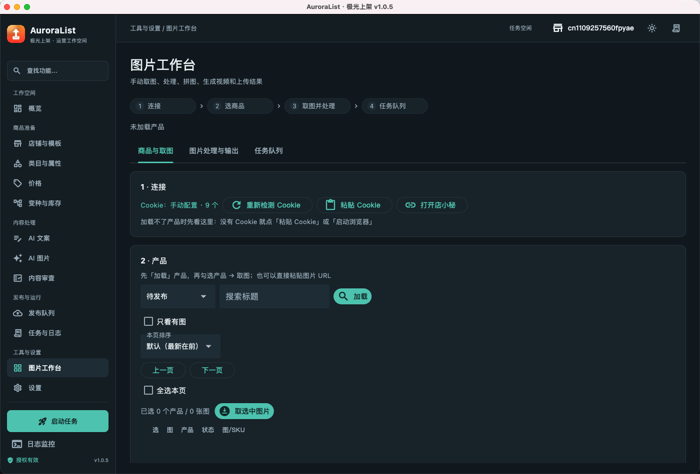
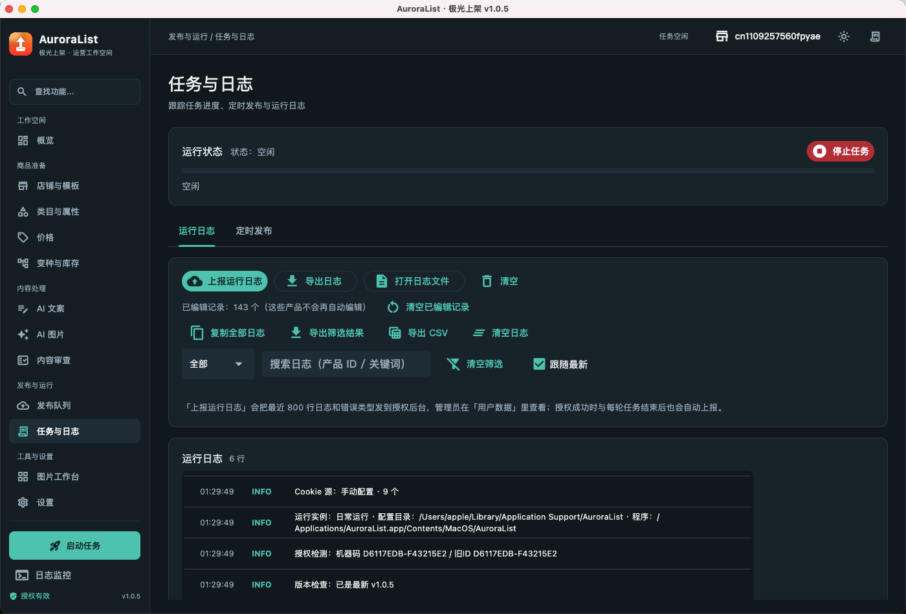
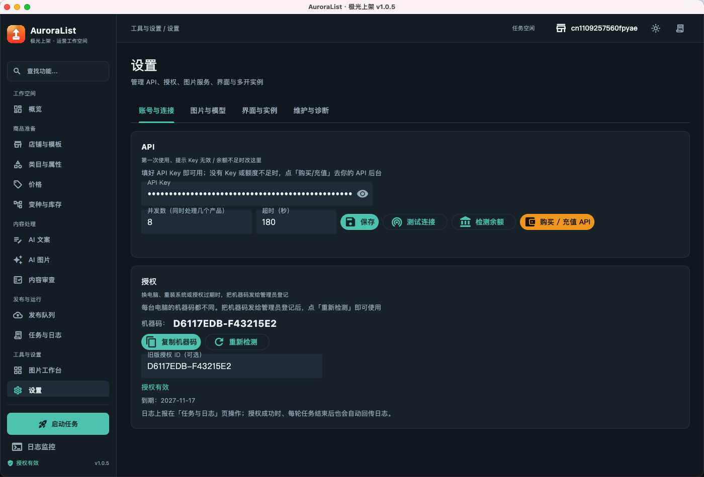

从装好软件，
到跑完第一批商品
每个页面、每个按钮做什么，都写在这里。遇到问题先看「常见问题与排查」。
装好并授权
打开软件 → 设置页确认「授权有效」。换机时把机器码发给管理员迁移。
连店小秘
店铺与模板 → 读取并同步；Cookie 过期就「重新检测」或「粘贴 Cookie」。
选模板并读取
选一个模板商品 → 读取模板参数，确认类目、运费、属性、重量都正确。
配文案与图片
AI 文案选提示词；AI 图片按需开白底/去水印/翻译，先只处理 1-3 张看效果。
先跑 1 个，再批量
概览 → 关键词填一个商品 → 启动。确认无误后再「搜索全部商品」批量跑。
概览
一屏掌握店铺状态，一键跑完一批商品。

- 01状态数字采集箱 / 待发布 / 发布失败 / 在线 / 审核中；点数字可直接跳到对应页面
- 02启动按当前设置开始跑一批商品（默认只处理采集箱）
- 03关键词只处理标题包含该词的商品，留空 = 全部
- 04应用范围限定本次处理哪些商品
- 05清空清空关键词与范围
- 06搜索全部商品不受采集箱限制，按关键词搜索全店商品
- 07刷新数量重新拉取各状态数量
- 08准备状态Cookie / AI API / 模板 / 授权，绿色才能一键启动；红色点进去修
- 09今日任务成功 / 失败 / 今日花费
- 10成本 / 用量今日与近 7 天花费、按功能拆分、7 天柱状趋势
- 11最近处理只看今天 / 只看失败 / 搜索；点缩略图看大图
店铺与模板
连接店小秘、选店铺、选模板商品。

- 01读取并同步自动读取本机 Chrome/Edge 已登录的店小秘并同步店铺
- 02重新检测 CookieCookie 过期时点它重新读取
- 03粘贴 Cookie读不到时手动粘贴一次
- 04选择店铺切换要操作的店铺，下方显示在线/待发布/审核中数量
- 05模板来源在线 / 采集箱 / 本地模板
- 06类目来源自动分类（商品自带类目）或按模板
- 07类目映射 / 学习把采集类目映射到你的常用类目
- 08选择模板产品选一个模板商品，后续继承运费模板、属性、重量尺寸
- 09保存模板到本地把模板参数存到本地，断网也能用
- 10模板库管理多个模板
- 11读取模板参数读取类目、运费、属性数量、重量，并显示模板首图
类目与属性
类目、规格库存、属性默认值与 SKU 图替换。

- 01类目显示当前生效方式；点「去店铺设置切换」改来源
- 02是否原箱按原箱计算运费与重量
- 03重量/长宽高默认规格，模板缺省时使用
- 04货值默认值申报价值，报关用
- 05高关注化学品 / 是否带电类目属性兜底，模板读不到时用这里
- 06属性模板与 SKU 图替换折叠区：搜索属性模板、清空已应用属性；把某个 SKU 图换成指定 URL
- 07欧盟资质需要时再填
- 08套装 SKU可选：为主 SKU 追加套装 SKU
AI 文案
英文标题、五点描述、SKU 名称。

- 01生成范围标题 / 描述 / SKU 名称，可单独勾选
- 02提示词模板选择或编辑提示词，支持 {title} 等占位
- 03生成预览先预览再写入，避免直接改坏商品
- 04应用写回当前商品或本次批量
- 05模型固定使用配置好的文本模型，无需自选
内容审查
违禁词检测与替换。

- 01检测范围标题 / 属性 / SKU / 详情
- 02词库内置违禁词 + 自定义词
- 03开始检测扫描当前商品或本次批量
- 04结果标出命中的词与位置，可替换或忽略
AI 图片
白底、去水印、翻译、精细化编辑。

- 01简单编辑 / 精细化编辑两种模式切换
- 02常用预设只做白底 / 只去水印 / 只做翻译 / 全部关闭，点后先预览再执行
- 03主图白底开关 + 起始/结束序号，只处理指定张
- 04主图去水印/Logo独立开关与序号范围
- 05主图文字翻译翻译序号内的文字
- 06描述图 / SKU 图同一套开关，分别控制
- 07精细化编辑逐张任务：第几张 + 提示词 + 参考图 + 插入位置
- 08冲突检查执行前提示互相冲突的开关
价格
倍率、区域定价、多 SKU 算价。

- 01价格模式倍率 / 固定加价 / 成本利润
- 02倍率 / 汇率按倍率换算售价，支持区域倍率
- 03区域定价按国家/地区单独定价
- 04多 SKU 分别计算不同 SKU 可用不同价格与重量
- 05试算预览改完先看结果再保存
- 06平台上限超过 999999 会自动截断并提示
变种与库存
SKU 组合、库存、重量尺寸、编码回写。

- 01SKU 组合选择属性生成组合
- 02库存批量设置库存
- 03重量尺寸每个 SKU 可单独设置
- 04SKU 编码自动生成规则；可回写到商品
- 05套装 SKU追加套装组合
- 06同步到商品把当前设置写入商品
发布队列
待发布 / 发布失败 / 发布中，集中发布与重试。

- 01待发布 / 发布失败 / 发布中三个数字，点开看对应列表
- 02刷新数量重新统计
- 03看待发布列表弹窗：按图数量排序，可多选发布
- 04看发布失败列表失败原因在列表与日志里
- 05批量发布二次确认后批量提交
- 06重试只重试失败的商品
- 07单条发布列表里每行右侧「发布」，成功后从列表移除
图片工作台
单商品手动调试图片。

- 01① 单张处理白底 / 去水印 / 翻译 / 编辑
- 02② 组合与输出四合一、合成视频、上传、导出
- 03③ 维护清理旧图、清理缓存
- 04图片墙排序、只看有图、点图放大
- 05处理结果每张结果可点「对比」看处理前后
- 06任务队列进度条与待处理/完成/失败统计
任务与日志
实时日志、筛选、导出。

- 01停止任务当前商品结束后停止
- 02日志级别全部 / INFO / WARN / ERROR
- 03搜索按产品 ID 或关键词
- 04清空筛选恢复全部日志
- 05跟随最新自动滚到最新一条
- 06导出筛选结果 / 导出 CSV导出当前筛选，CSV 可直接用 Excel 打开
- 07复制全部日志整段复制给客服排查
- 08清空日志二次确认后清空本地日志
- 09上传运行日志把最近日志上报授权后台，方便远程排查
设置
授权、API、图床、界面与诊断。

- 01机器码 / 复制 / 重新检测换机或授权异常时用
- 02授权状态到期时间与是否有效
- 03API 地址与 Key中转站配置
- 04推荐配置一键恢复图床 / API 默认值
- 05图床图片转存地址与 Key
- 06模型与价格当前模型与单价（只读）
- 07界面与运行启动页面、窗口大小、快捷键
- 08系统诊断API / 浏览器 / 店小秘 / ffmpeg / 磁盘；缺 ffmpeg 可一键下载
常见问题与排查
客服最常被问到的 12 个问题
启动没反应 / 提示配置冲突
看概览「准备状态」：Cookie、AI API、模板、授权四项全绿才能启动；红色项点进去修复。也可点「检查配置冲突」。
保存失败：只有采集箱商品才能操作
商品已不在采集箱（待发布/审核中/在线）。先在店小秘移回采集箱，或直接去「发布队列」处理。
图片没变化
确认「AI 图片」里对应开关已开、序号包含该张；精细化编辑要有提示词。日志会写明「模型」「超时」或「尺寸不合格」。
提示未找到 ffmpeg
只影响「生成轮播视频」。到设置 → 系统诊断点「下载并安装 ffmpeg」，或关掉视频来源里的「合成视频」。
重复扣费吗
不会。图片请求带幂等键，超时重试、手动重跑同一张图都只计费一次。
换电脑授权还在吗
授权绑定机器码。把新机器码发给管理员迁移，或在授权后台解绑旧机器。
想回滚某次改动
软件保存前会保留原商品；图片/文案修改前可先预演，批量前建议只跑 1 个确认。
怎么反馈问题最快
任务与日志 → 按产品 ID 筛选 → 复制日志（或导出 CSV）发给客服，附上软件版本与操作步骤。
只想处理其中几个商品
概览填「关键词」只跑标题包含该词的；或用「应用范围」限定；也可以直接去「发布队列」按列表处理。
图片尺寸不达标被丢弃
日志会写「尺寸不合格」。可在设置里调整最小尺寸要求，或让 AI 重新生成；营销图由本地裁切自动补足 800×800。
多店铺怎么切换
店铺与模板 → 选择店铺，切换后重新读取模板参数；每个店铺可保存各自的模板与价格策略。
配置和日志在哪
Windows：%LOCALAPPDATA%\AuroraList；macOS：~/Library/Application Support/AuroraList。备份 config.json 即可迁移配置。
下载与咨询
Windows / macOS 安装包，免费更新